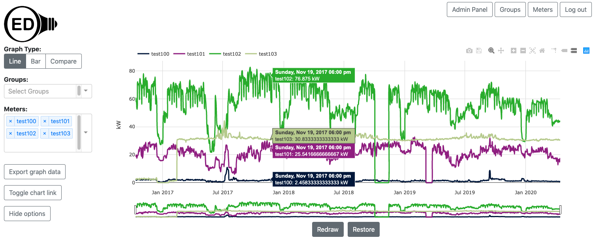

Developers want to have test meter data for OED development that is consistent, stable and does not require having access to actual meters. This describes how to get and load such meter test data.
The comparison graphic in OED uses the current time to compare usage over a given period to the same period shifted by that same period in the past. Since the test data has static dates, they will not include dates near the current time. This means that you cannot see comparison data. We will be posting directions to import test data that will allow comparison graphs.
OED has developed code to generate mathematically-based meter data that is easy to tell visually if it is correct. That data will be coming and allow developers to generate the test data on their own machine rather than download it. Also, we will soon update OED to allow for upload of both meters and meter readings information via a CSV file. We will combine both of these by providing scripts to generate and load desired test data into OED. This will greatly simplify the process. When it is available, this page will be updated and it will be announced to developers.
What follows assumes you have a properly installed and working OED but you may not yet have any meters in OED. At a minimum you should be able to see the main OED page in a web browser (normally URL of localhost:3000). Normally the database is automatically created and works fine. If you get errors about the database then you need to address them before you can do this or get the test data in (if you get errors during this process). Finally, these directions are written assuming you are using Docker. It should be possible to do these outside Docker. Please let the project know if you are interested in directions for doing that.
The data sets use a fixed meter_id in the database starting at 100 and larger values. It is assumed you have not added enough meters to get to this value. Having a fixed id makes debugging easier as you know the value in the database. You can modify the meter_id in the CSV but that is not normally done. If you happen to have an overlap then you will get an error during loading of the meter data and no meter data will be added to OED.
The meter CSV file is always small but some readings CSV files can be large so the size is given for those.
Here are the types of test data we have (these files are compatible with the OED database in development as of 8 January 2021 and we try update them whenever changes are needed):
| Description | Meter CSV | Readings CSV | Size of Readings File | Meters included |
|---|---|---|---|---|
| Contains actual electric data for four meters on an hourly basis for about 3.5 years (Oct. 2016-Apr. 2020) | threeYearMeters.csv | threeYearReadings.csv | 5.8MB | test100-103 |
| Sample file to edit for your own data | sampleMeters.csv | sampleReadings.csv | 0 MB | XXX |
You will need to download two files in one row for this process: a meter CSV and a readings CSV. Clicking on the link in a web browser will download that file. Note you can load as many test data files as you want into a single OED instance.
You will want to have OED running during this process. Start it with Docker as you should have previously done. You will need a second terminal/shell window to run the commands given.
When you run Docker, it containerizes the work. In order to make the database changes last between runs, the OED setup has the database information stored into a file in your OED installation. This is located at <your OED main directory>/postgres-data/. The OED main directory is the one with the README.md, etc. When PostgreSQL looks for files to load when you use Docker with OED it will look in this directory (<your OED main directory>/postgres-data/). Thus, you need to place all the CSV files you will load there. Note that depending on your setup (so far only seen on some Linux-based systems), the postgres-data/ directory may not be owned by your user and you may not have permission to write on this directory. If this is the case you will need to use the superuser (su or sudo) to move the CSV files into that directory.
All commands are run in a terminal/shell. You need to be in your main OED directory (the one with README.md, etc.) in this terminal/shell.
Note that on some systems you need to do sudo before each docker-compose command. If you needed to do that when installing OED then you will need to do that here. It is not shown in the commands given.
Before you can load in readings, OED needs to have the meters associated with the readings added. These files all have ...Meters.csv as the name where ... is the part of the file name that describes the specific test data set. Make sure to replace ... with the name of your specific file in each command. The steps are:
docker-compose exec database psql -U oed -c "COPY meters FROM '...Meters.csv' CSV HEADER"You will now add readings data for the meters you just added. These files all have ...Readings.csv as the name where ... is the part of the file name that describes the specific test data set and the ... should be the same as it was for ...Meters.csv . The steps are:
docker-compose exec database psql -U oed -c "COPY readings FROM '...Readings.csv' CSV HEADER"docker-compose run --rm web npm run refreshReadingViews
If you don't see this then something is wrong and you should not continue this process and instead ask us for help.
(See link at bottom of page)
You can download the sample data from the table above. It is important as you edit the files to leave the first header line unchanged. Here is how to edit these files:
You should now be done and have the test data in your OED development system. If something did not work then you can seek help from the project by contacting us.